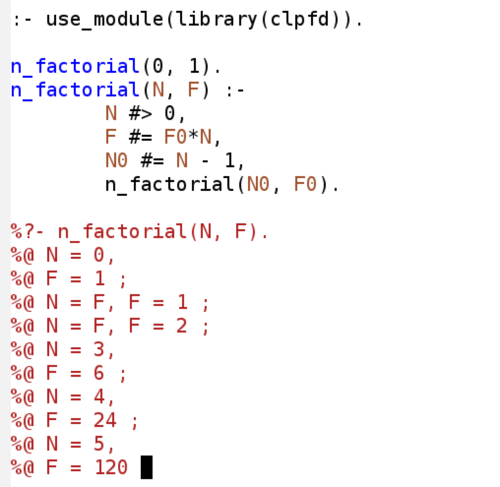

|
ediprolog lets you interact with SWI-Prolog in all
Emacs buffers. You can consult Prolog programs and evaluate
embedded queries.
The latest version of ediprolog is 1.2. New: Download: ediprolog.el Video demonstration: ediprolog.mpg (1MB) For more information about Prolog development with Emacs, see PceProlog. More about Prolog: The Power of Prolog |
 |
(require 'ediprolog)
(global-set-key [f10] 'ediprolog-dwim)
If F10 is not free on your platform, bind ediprolog-dwim to any
other key sequence, for example, use:
(global-set-key "\C-c\C-e" 'ediprolog-dwim)
to bind it to C-c C-e. In the following, replace "F10" with your
custom binding.
%?- member(X, [a,b,c]).
If you press F10 when point is on that query, you get:
%?- member(X, [a,b,c]).
%@ X = a ;
%@ X = b ;
%@ X = c ;
%@ false.
When waiting for output of the Prolog process, you can press C-g to unblock Emacs and continue with other work. To resume interaction with the Prolog process, use M-x ediprolog-toplevel RET.
If you press F10 when point is not on a query, the buffer content is consulted in the Prolog process, and point is moved to the first error (if any). You do not need to save the file beforehand, since the buffer content (not the file) is consulted.
In transient mark mode, if the region is active, only the text in the region is consulted.
| C-0 F10 | kill Prolog process |
| C-1 F10 | always consult buffer (even if point is on a query) |
| C-2 F10 | always consult buffer, using a new process |
| C-7 F10 | equivalent to ediprolog-toplevel |
| C-u F10 | first load buffer into existing process and then, if on a query, evaluate it |
| C-u C-u F10 | like C-u F10, with a new process |